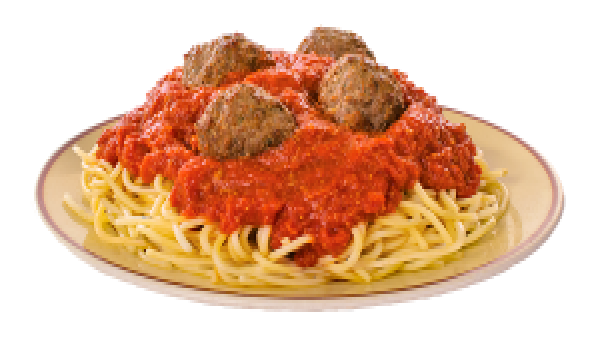

Spaghetti and meatballs

Description
Italian-American culture summed up as a dish, consisting of spaghetti, tomato sauce and meatballs.
Grated cheese topping optional but highly recommended.
Ingredients
- 1 lb (453 g) ground beef
- 1/3 cup (20 g) breadcrumbs
- 1/3 cup (20 g) grated pecorino or parmesan cheese, leave some for garnish
- Milk
- 1/2 tsp salt (or more depending on preference)
- 1/2 tsp garlic powder
- 1/2 tsp onion powder
- 1/4 tsp cayenne pepper
- Black pepper
- Olive oil
- 1 tbsp tomato paste
- 28 oz (800 g) can of crushed tomatoes
- 1/2 lb (225 g) dried spaghetti
- Parsley or basil
Steps
- Add ground beef, grated cheese, salt, garlic powder, onion powder, cayenne pepper and a generous amount of black pepper into a bowl
- In a separate receptacle, soak breadcrumbs into milk and soak for a minute
- Lift breadcrumbs out of milk (squeeze milk out of crumbs for firmer meatballs) and add to meat mixture
- Gently mix meat mixture together with fingertips until somewhat homogenous
- Roll meat into balls (approx. 2 cm wide) then let it sit covered and refrigerated for a few hours (preferably overnight)
- Heat olive oil in a wide pan on moderate heat. Add meatballs and cook until one side is browned
- Carefully push meatballs off to the side to brown as much of the other side as possible, be careful not to let the meat burn
- Put the tomato paste in to fry for a bit, then add crushed tomatoes to deglaze the pan
- Stir frequently for 10-20 minutes until the sauce has been reduced according to preference
- Before eating, add grated cheese and freshly chopped herb into sauce then taste for salt
- Boil spaghetti in water until almost done (do not overcook as the spagheti continues to cook due to residual heat)
- Drain spaghetti and mix it in sauce and meatballs, adding some pasta water if the sauce is not liquid enough
- Serve on plate topped with grated cheese and fresh herb